Peixes
Da Vale das Araucárias Wiki
Todos os peixes do jogo receberam nome, descrição e sprite de espécies e referências do Sul do Brasil. Preço, dificuldade, local, estação, horário e clima continuam iguais aos do jogo original.
Esta página reúne os 74 itens de pesca do mod Vale das Araucárias: 48 peixes de vara (incluindo a Cambeva), 5 lendários, 5 lendários II, 3 peixes do Mercado Noturno, 10 itens de covo e 3 geleias. Clique no nome para abrir o artigo de cada peixe.
Conteúdo
Peixes de vara
Pescados com vara no minijogo de pesca. A dificuldade vai de 15 a 95; entre parênteses, o comportamento do peixe na barra (misto, suave, afunda, flutua ou dardo).
| Imagem | Nome | Substitui | Descrição | Preço | Local | Horário | Estação | Clima | Dificuldade |
|---|---|---|---|---|---|---|---|---|---|
| Baiacu-pintado | Pufferfish | Baiacu do litoral que infla o corpo quando ameaçado. Carrega um veneno muito forte. | 200g | Oceano (Praia) Oceano da Ilha Gengibre | 12h – 16h | Sol | 80 (flutua) | ||
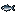 | Manjuba | Anchovy | Pequeno peixe prateado de cardume, comum nos estuários do Sul. | 30g | Oceano (Praia) | Qualquer horário | Qualquer | 30 (dardo) | |
| Bonito-listrado | Tuna | Atum veloz de mar aberto, muito apreciado na pesca costeira. | 100g | Oceano (Praia) Oceano da Ilha Gengibre | 6h – 19h | Qualquer | 70 (suave) | ||
| Sardinha-verdadeira | Sardine | Sardinha-verdadeira, base dos cardumes do litoral sul. | 40g | Oceano (Praia) | 6h – 19h | Qualquer | 30 (dardo) | ||
| Lambari-do-rabo-amarelo | Bream | Lambari de nadadeiras amareladas, abundante em rios e arroios. | 45g | Rio da Vila Pelicanos Rio da Floresta Cinzaseiva | 18h – 2h | Todas as estações | Qualquer | 35 (suave) | |
| Traíra | Largemouth Bass | Predador voraz de águas paradas; espreita entre a vegetação. | 100g | Lago da Montanha | 6h – 19h | Todas as estações | Qualquer | 50 (misto) | |
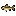 | Jóquerê | Smallmouth Bass | Peixe esguio e atento, caça perto da correnteza. | 50g | Rio da Vila Pelicanos Lagoa da Floresta Cinzaseiva | Qualquer horário | Qualquer | 28 (misto) | |
| Lambari-prata | Rainbow Trout | Lambari prateado de águas limpas e frescas. | 65g | Rio da Vila Pelicanos Rio da Floresta Cinzaseiva Lago da Montanha | 6h – 19h | Sol | 45 (misto) | ||
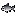 | Grumatã | Salmon | Peixe de piracema; sobe os rios em grandes cardumes. | 75g | Rio da Vila Pelicanos Rio da Floresta Cinzaseiva Cachoeiras da Floresta | 6h – 19h | Qualquer | 50 (misto) | |
| Joaninha | Walleye | Ciclídeo esguio e de boca grande. Fica de tocaia entre plantas e pedras para caçar peixinhos. | 105g | Rio da Vila Pelicanos Rio da Floresta Cinzaseiva Lagoa da Floresta Cinzaseiva Lago da Montanha | 12h – 2h | Chuva | 45 (suave) | ||
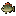 | Cará | Perch | Ciclídeo robusto que escava o fundo em busca de alimento. | 55g | Rio da Vila Pelicanos Rio da Floresta Cinzaseiva Lagoa da Floresta Cinzaseiva Lago da Montanha | Qualquer horário | Qualquer | 35 (dardo) | |
| Piava | Carp | Peixe migrador de boca saliente; resistente e comum. | 30g | Lago da Montanha Bosque Secreto Esgoto Covil do Inseto Mutante | Qualquer horário | Todas as estações | Qualquer | 15 (misto) | |
| Jundiá | Catfish | Bagre nativo de couro liso; caça de noite no leito dos rios. | 200g | Rio da Vila Pelicanos Rio da Floresta Cinzaseiva Bosque Secreto Pântano da Bruxa | 6h – 0h | Chuva | 75 (misto) | ||
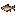 | Tabarana | Pike | Predador rápido e musculoso das corredeiras. | 100g | Rio da Vila Pelicanos Rio da Floresta Cinzaseiva Lagoa da Floresta Cinzaseiva | Qualquer horário | Qualquer | 60 (dardo) | |
| Lambari-guaçu | Sunfish | Lambari grande que se reúne em cardumes ao sol. | 30g | Rio da Vila Pelicanos Rio da Floresta Cinzaseiva | 6h – 19h | Sol | 30 (misto) | ||
| Tainha | Red Mullet | A tainha da safra de inverno, que sobe a costa em grandes cardumes vindos da Lagoa dos Patos. | 75g | Oceano (Praia) | 6h – 19h | Qualquer | 55 (suave) | ||
| Savelha | Herring | Peixe de cardume costeiro, parente da sardinha. | 30g | Oceano (Praia) | Qualquer horário | Qualquer | 25 (dardo) | ||
| Enguia-de-lama | Eel | Peixe de corpo alongado que caça no escuro, entre o lodo. | 85g | Oceano (Praia) | 16h – 2h | Chuva | 70 (suave) | ||
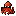 | Polvo-comum | Octopus | Molusco de oito braços, astuto e bom de se esconder. | 150g | Oceano (Praia) Oceano da Ilha Gengibre | 6h – 13h | Qualquer | 95 (afunda) | |
| Vermelho-cioba | Red Snapper | Peixe vermelho de recife, capturado em águas profundas. | 50g | Oceano (Praia) | 6h – 19h | Chuva | 40 (misto) | ||
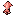 | Lula-costeira | Squid | Lula costeira; aparece em maior número à noite. | 80g | Oceano (Praia) | 18h – 2h | Qualquer | 75 (afunda) | |
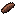 | Pepino-do-mar | Sea Cucumber | Equinodermo mole do fundo do mar; filtra o sedimento. | 75g | Oceano (Praia) | 6h – 19h | Qualquer | 40 (afunda) | |
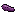 | Holotúria-roxa | Super Cucumber | Uma holotúria grande e rara, de cor arroxeada. | 250g | Oceano (Praia) Oceano da Ilha Gengibre | 18h – 2h | Qualquer | 80 (afunda) | |
| Bagre-cego | Ghostfish | Peixe cavernícola pálido e sem olhos, vive no escuro total. | 45g | Minas (andares 20 e 60) Derrubado por fantasmas | Qualquer horário | Todas as estações | Qualquer | 50 (misto) | |
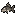 | Cascudo-de-pedra | Stonefish | Cascudo encouraçado que se agarra às pedras do fundo. | 300g | Minas (andar 20) | Qualquer horário | Todas as estações | Qualquer | 65 (afunda) |
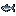 | Lambari-do-sul | Ice Pip | Pequeno peixe de águas geladas e límpidas. | 500g | Minas (andar 60) | Qualquer horário | Todas as estações | Qualquer | 85 (dardo) |
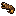 | Moréia-pintada | Lava Eel | Moréia marinha sinuosa que vive entre fendas de rocha. | 700g | Minas (andar 100) Caldeira do Vulcão (Ilha Gengibre) | Qualquer horário | Todas as estações | Qualquer | 90 (misto) |
| Linguado-areia | Sandfish | Peixe chato que se enterra no fundo de areia. | 75g | Deserto Calico | 6h – 20h | Todas as estações | Qualquer | 65 (misto) | |
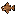 | Cascudo-chinelo | Scorpion Carp | Cascudo-chinelo achatado, camuflado no leito arenoso. | 150g | Deserto Calico | 6h – 20h | Todas as estações | Qualquer | 90 (dardo) |
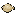 | Linguado-branco | Flounder | Peixe chato com os dois olhos do mesmo lado do corpo; vive deitado no fundo. | 100g | Oceano (Praia) Oceano da Ilha Gengibre | 6h – 20h | Qualquer | 50 (afunda) | |
| Traíra-pintada | Midnight Carp | Traíra de hábito noturno; caça sob a lua. | 150g | Lagoa da Floresta Cinzaseiva Lago da Montanha Rios da Ilha Gengibre | 22h – 2h | Qualquer | 55 (misto) | ||
| Surubim-pintado | Sturgeon | Bagre gigante de couro pintado e bigodes longos. Caça à noite no fundo dos grandes rios. | 200g | Lago da Montanha | 6h – 19h | Qualquer | 78 (misto) | ||
| Pintado-do-iguaçu | Tiger Trout | Surubim endêmico de corpo manchado; raro e cobiçado. | 150g | Rio da Vila Pelicanos Rio da Floresta Cinzaseiva | 6h – 19h | Qualquer | 60 (dardo) | ||
| Mandi-amarelo | Bullhead | Mandi amarelado de fundo de lago. | 75g | Lago da Montanha | Qualquer horário | Todas as estações | Qualquer | 46 (suave) | |
| Corvina | Tilapia | Peixe de cardume costeiro, carne branca e saborosa. | 75g | Oceano (Praia) Rios da Ilha Gengibre | 6h – 14h | Qualquer | 50 (misto) | ||
| Lambari-do-mato | Chub | Pequeno lambari dos rios de mata fechada. | 50g | Rio da Floresta Cinzaseiva Lago da Montanha | Qualquer horário | Todas as estações | Qualquer | 35 (dardo) | |
| Dourado | Dorado | O dourado dourado-reluzente, troféu dos pescadores de rio. | 100g | Rio da Floresta Cinzaseiva | 6h – 19h | Qualquer | 78 (misto) | ||
| Albacora-lage | Albacore | Atum de nadadeiras amarelas, de mar aberto. | 75g | Oceano (Praia) | 6h – 11h e 18h – 2h | Qualquer | 60 (misto) | ||
| Sairu | Shad | Peixinho prateado de cardume das lagoas e rios do Sul. Vive fuçando o lodo do fundo atrás de comida. | 60g | Rio da Vila Pelicanos Rio da Floresta Cinzaseiva | 9h – 2h | Chuva | 45 (suave) | ||
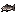 | Pintado-cachara | Lingcod | Grande surubim de boca larga; emboscada no fundo. | 120g | Rio da Vila Pelicanos Rio da Floresta Cinzaseiva Lago da Montanha | Qualquer horário | Qualquer | 85 (misto) | |
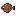 | Linguado-do-rio-grande | Halibut | Linguado de águas frias, apreciado na mesa. | 80g | Oceano (Praia) | 6h – 11h e 19h – 2h | Qualquer | 50 (afunda) | |
| Cará-pixuna | Woodskip | Peixinho ágil das lagoas sombreadas da floresta. | 75g | Bosque Secreto Fazenda da Floresta | Qualquer horário | Todas as estações | Qualquer | 50 (misto) | |
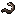 | Muçum | Void Salmon | Peixe escuro de banhado; some no lodo das águas paradas. | 150g | Pântano da Bruxa | Qualquer horário | Todas as estações | Qualquer | 80 (misto) |
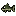 | Cascudinho-viscoso | Slimejack | Cascudinho coberto por uma camada viscosa. | 100g | Covil do Inseto Mutante | Qualquer horário | Todas as estações | Qualquer | 55 (dardo) |
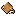 | Raia-viola | Stingray | Meio raia, meio tubarão, com o corpo em forma de viola. Vive no fundo de areia e está ameaçada de extinção. | 180g | Enseada dos Piratas (Ilha Gengibre) | Qualquer horário | Todas as estações | Qualquer | 80 (afunda) |
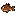 | Niquim | Lionfish | Peixe peçonhento; cuidado com os espinhos. | 100g | Oceano da Ilha Gengibre | Qualquer horário | Todas as estações | Qualquer | 50 (suave) |
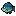 | Cará-azul | Blue Discus | Ciclídeo de reflexos azulados das águas do Sul. | 120g | Rios da Ilha Gengibre | Qualquer horário | Todas as estações | Qualquer | 60 (dardo) |
| Cambeva | Goby | Pequeno bagre de corpo alongado e bigodes que vive nos riachos do Sul do Brasil. Esconde-se entre as pedras, perto das corredeiras. | 150g | Cachoeiras da Floresta | Qualquer horário | Todas as estações | Qualquer | 55 (dardo) |
* Observações de estação:
- Baiacu-pintado: na Ilha Gengibre, o ano todo.
- Bonito-listrado: na Ilha Gengibre, o ano todo.
- Joaninha: no inverno, só com Totem da Chuva.
- Jundiá: no Bosque Secreto e no Pântano da Bruxa, primavera, verão e outono; no inverno, só com Totem da Chuva.
- Polvo-comum: na Ilha Gengibre, o ano todo.
- Vermelho-cioba: no inverno, só com Totem da Chuva.
- Holotúria-roxa: na Ilha Gengibre, o ano todo.
- Linguado-branco: na Ilha Gengibre, o ano todo.
- Traíra-pintada: na Ilha Gengibre, o ano todo.
- Corvina: na Ilha Gengibre, o ano todo.
Nível de pesca exigido: Cascudo-chinelo só morde a partir do nível 4.
Peixes noturnos
Peixes que só começam a morder a partir do fim da tarde. Os dados são os do jogo base.
| Imagem | Nome | Horário | Local | Estação | Clima |
|---|---|---|---|---|---|
| Lambari-do-rabo-amarelo | 18h – 2h | Rio da Vila Pelicanos Rio da Floresta Cinzaseiva | Todas as estações | Qualquer | |
| Enguia-de-lama | 16h – 2h | Oceano (Praia) | Chuva | ||
| Lula-costeira | 18h – 2h | Oceano (Praia) | Qualquer | ||
| Holotúria-roxa | 18h – 2h | Oceano (Praia) Oceano da Ilha Gengibre | Qualquer | ||
| Traíra-pintada | 22h – 2h | Lagoa da Floresta Cinzaseiva Lago da Montanha Rios da Ilha Gengibre | Qualquer |
Os peixes do Mercado Noturno também são pescados à noite. O Pacote de Pesca Noturna pede Joaninha, Lambari-do-rabo-amarelo e Enguia-de-lama.
Peixes por estação
Peixes de vara disponíveis em cada estação, fora da Ilha Gengibre (onde os peixes da ilha aparecem o ano todo). Os que aparecem em todas as estações estão na última linha.
Todas as estações: Lambari-do-rabo-amarelo, Traíra, Piava, Bagre-cego, Cascudo-de-pedra, Lambari-do-sul, Moréia-pintada, Linguado-areia, Cascudo-chinelo, Mandi-amarelo, Lambari-do-mato, Cará-pixuna, Muçum, Cascudinho-viscoso, Raia-viola, Niquim, Cará-azul, Cambeva.
Peixes de locais especiais
| Local | Peixes de vara |
|---|---|
| Minas | Bagre-cego, Cascudo-de-pedra, Lambari-do-sul, Moréia-pintada |
| Deserto Calico | Linguado-areia, Cascudo-chinelo |
| Bosque Secreto | Piava, Jundiá, Cará-pixuna |
| Fazenda da Floresta | Cará-pixuna |
| Pântano da Bruxa | Jundiá, Muçum |
| Covil do Inseto Mutante | Piava, Cascudinho-viscoso |
| Esgoto | Piava |
| Cachoeiras da Floresta | Grumatã, Cambeva |
| Ilha Gengibre | Baiacu-pintado, Bonito-listrado, Polvo-comum, Holotúria-roxa, Moréia-pintada, Linguado-branco, Traíra-pintada, Corvina, Raia-viola, Niquim, Cará-azul |
O peixe lendário Nonoaiense e sua versão Carpa-cabeçuda também vivem no Esgoto.
Peixes lendários
Os cinco lendários têm nomes e histórias humorísticas com referências regionais. Cada um só pode ser pescado uma vez por save. Local, estação, clima, dificuldade e nível de pesca são os do jogo base.
| Imagem | Nome | Substitui | Descrição | Preço | Local | Estação | Clima | Dificuldade | Nível |
|---|---|---|---|---|---|---|---|---|---|
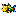 | Neymarfish | Crimsonfish | Veio do aquário da casa de uma pessoa completamente viciada em Neymar. De tanto assistir aos melhores momentos do ídolo, aprendeu a driblar até os anzóis. | 1.500g | Píer leste da Praia | Qualquer | 95 (misto) | 5 | |
| Nonoaiense | Mutant Carp | Nasceu das lágrimas de um menino chamado Murilo, que chora pela ex. O desejo de tê-la de volta foi tão forte que acabou dando vida a este peixe lendário. | 1.000g | Esgoto | Todas as estações | Qualquer | 80 (dardo) | — | |
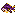 | Marcio67 | Angler | Era um professor do SENAI que tinha tanta aura que acabou virando um peixe lendário. Mesmo debaixo d'água, continua dando aula de respeito. | 900g | Extremo norte do rio da Vila Pelicanos, ao norte do JojaMart | Qualquer | 85 (suave) | 3 | |
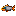 | Tozzofish | Glacierfish | Era uma empresa de transporte que virou peixe porque o ADM quis. Agora transporta sua própria aura pelos rios, sem aceitar questionamentos. | 1.000g | Floresta Cinzaseiva, ponta sul da ilha Arrowhead | Qualquer | 100 (misto) | 6 | |
| Ifsc | Legend | Dizem que só aparece depois que um estudante do IFSC Chapecó enfrenta 40 provas na mesma semana. Nasceu da mistura de café, desespero e esperança de que o professor arredonde a nota. | 5.000g | Lago da Montanha, perto do tronco | Chuva | 110 (misto) | 10 |
Peixes lendários II
Versões da missão especial Extended Family do Sr. Qi. Ficam disponíveis apenas durante a missão, em qualquer estação e clima, e podem ser pescados mais de uma vez.
| Imagem | Nome | Substitui | Descrição | Preço | Local | Estação | Clima | Dificuldade | Nível |
|---|---|---|---|---|---|---|---|---|---|
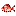 | Pargo-rosa | Son of Crimsonfish | Peixe rosado com pintinhas azuis, pescado com linha nos fundos de pedra do litoral do Sul. | 1.500g | Píer leste da Praia | Todas as estações | Qualquer | 95 (misto) | 5 |
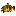 | Peixe-sapo | Ms. Angler | Tem cabeça larga, boca enorme e corpo manchado. Fica imóvel no fundo, camuflado, esperando a presa chegar perto. | 900g | Extremo norte do rio da Vila Pelicanos, ao norte do JojaMart | Todas as estações | Qualquer | 85 (suave) | 3 |
| Suruvi | Legend II | Bagre grande e raro do rio Uruguai, de couro manchado. Está ameaçado de extinção. | 5.000g | Lago da Montanha, perto do tronco | Todas as estações | Qualquer | 110 (misto) | 10 | |
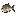 | Carpa-cabeçuda | Radioactive Carp | Carpa de cabeça enorme, trazida da Ásia para os açudes de criação. Come filtrando o plâncton da água. | 1.000g | Esgoto | Todas as estações | Qualquer | 80 (dardo) | — |
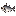 | Merluza | Glacierfish Jr. | Peixe prateado de boca grande e dentes afiados, das águas frias e fundas do Atlântico Sul. | 1.000g | Floresta Cinzaseiva, ponta sul da ilha Arrowhead | Todas as estações | Qualquer | 100 (misto) | 6 |
Mercado Noturno
Peixes pescados no passeio de submarino do Mercado Noturno, nos dias 15, 16 e 17 de inverno, das 17h às 2h.
| Imagem | Nome | Substitui | Descrição | Preço | Dificuldade |
|---|---|---|---|---|---|
| Calamar-argentino | Midnight Squid | Lula das águas frias e fundas do Atlântico Sul. À noite, sobe para perto da superfície para caçar. | 100g | 55 (afunda) | |
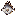 | Galo-de-profundidade | Spook Fish | Peixe prateado de corpo alto e fino como um prato. Vive no fundo do mar, a centenas de metros. | 220g | 60 (dardo) |
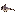 | Peixe-rato | Blobfish | Tem cabeça grande e cauda longa e fina como a de um rato. Vive no escuro do fundo do mar. | 500g | 75 (flutua) |
Peixes de covo
Crustáceos e moluscos capturados com covo. Não dependem de horário, estação ou clima; o que define a captura é o tipo de água.
| Imagem | Nome | Substitui | Descrição | Preço | Água | Coleta na Praia |
|---|---|---|---|---|---|---|
| Cavaco | Lobster | Parente achatado da lagosta, com antenas curtas em forma de pá. Passa o dia escondido nas tocas de pedra. | 120g | Salgada | — | |
| Marisco-branco | Clam | Molusco de concha branca que vive enterrado na areia das praias gaúchas, bem onde as ondas quebram. | 50g | Salgada | Sim | |
| Siri-azul | Crab | Siri de patas azuladas. As patas de trás têm forma de remo e o fazem nadar rápido. Comum na Lagoa dos Patos. | 100g | Salgada | — | |
| Berbigão | Cockle | Pequeno molusco de concha riscada, catado na lama rasa das baías de Florianópolis. | 50g | Salgada | Sim | |
| Mexilhão | Mussel | Vive grudado nas pedras do costão em grandes colônias. Santa Catarina é o maior produtor do Brasil. | 30g | Salgada | Sim | |
| Camarão-rosa | Shrimp | Nasce no mar, cresce na Lagoa dos Patos e volta ao oceano quando fica adulto. | 60g | Salgada | — | |
| Ostra-do-mangue | Oyster | Ostra nativa que cresce presa às raízes do mangue, no litoral do Paraná e de Santa Catarina. | 40g | Salgada | Sim | |
| Lagostim | Crayfish | Lagostim nativo de água doce. Vive escondido em tocas no barro de riachos e banhados do Rio Grande do Sul. | 75g | Doce | — | |
| Aruá | Snail | Caramujo grande de água doce. Põe cachos de ovos cor-de-rosa fora d'água, em plantas e pedras. | 65g | Doce | — | |
| Caramujinho | Periwinkle | Caramujo pequeno de concha cônica e pontuda. Vive aos montes no fundo de rios e lagoas, raspando algas. | 20g | Doce | — |
Geleias e outros itens
As geleias da versão 1.6 do jogo receberam nomes regionais. O mod não troca os sprites delas.
Geleia de Florianópolis

Uma substância gelatinosa rara, encontrada ao pescar no mar. Lembra as águas do litoral de Florianópolis.
- Substitui: Sea Jelly (SeaJelly)
- Preço de venda: 200g
- Onde encontrar: Pescando com vara no mar (Praia, Fazenda da Praia, submarino do Mercado Noturno e mar da Ilha Gengibre).
Geleia do Açude

Uma substância gelatinosa rara de água doce, encontrada ao pescar em rios, lagoas e açudes.
- Substitui: River Jelly (RiverJelly)
- Preço de venda: 125g
- Onde encontrar: Pescando com vara em água doce.
Geleia da Grota

Uma geleia rara dos lagos subterrâneos. Dizem que ela treme no ritmo de 'Do Fundo da Grota', como se Baitaca estivesse cantando lá embaixo.
- Substitui: Cave Jelly (CaveJelly)
- Preço de venda: 180g
- Onde encontrar: Pescando com vara nas Minas (andares 20, 60 e 100).
As geleias não entram no minijogo de pesca como peixes, não são vendidas ao Willy como peixe e não contam como "qualquer peixe" em receitas. Servem, entre outros usos, como combustível do defumador de peixes (Fish Smoker).
Mecânicas preservadas
Segundo a documentação do mod, continuam exatamente iguais aos do jogo: preço, dificuldade, movimento no minijogo, estação, horário, clima, local, iscas, covos, receitas, pacotes do Centro Comunitário, missões, viveiros e ovas. O mod edita só o nome exibido e a descrição em Data/Objects e os sprites em Maps/springobjects.
Limites conhecidos: as animações dos peixes dentro de aquários usam outra imagem e continuam originais; cartas, falas e textos de missão que citam esses itens pelo nome original continuam com o nome original.